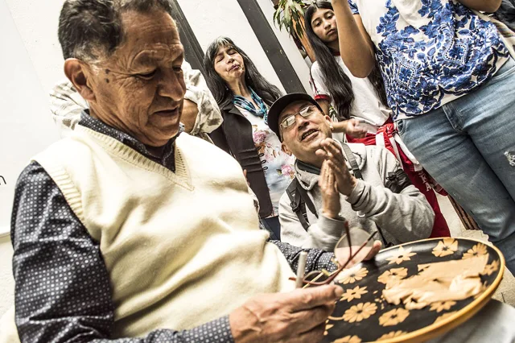
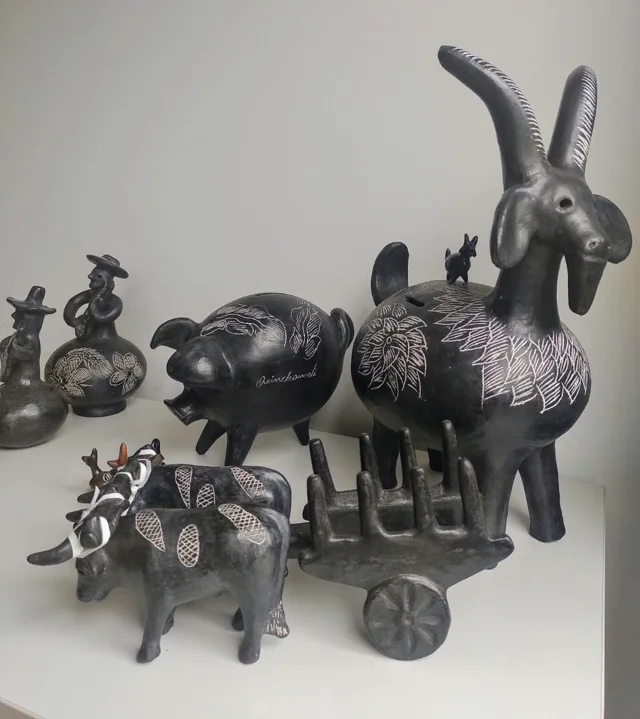
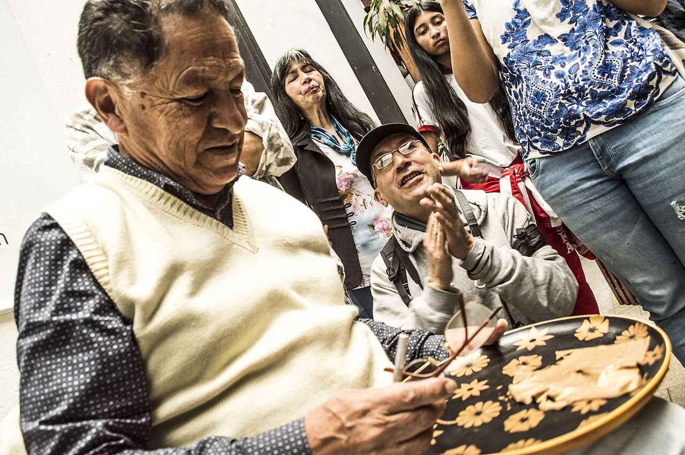
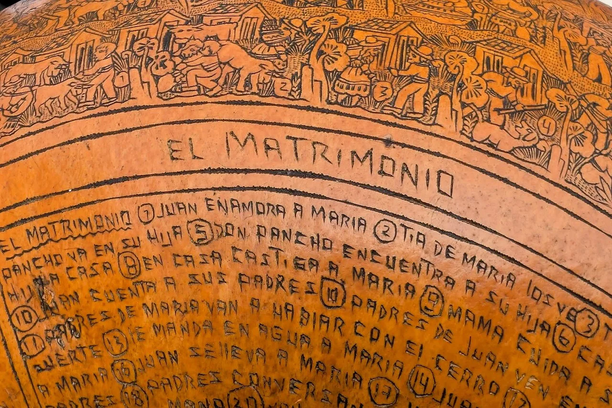
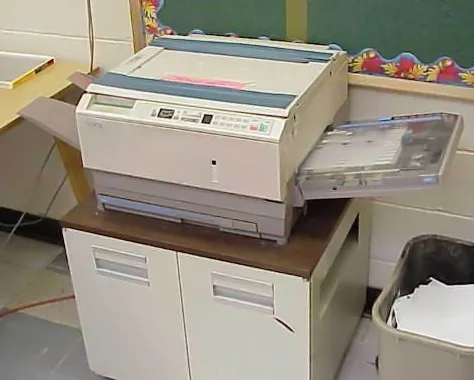
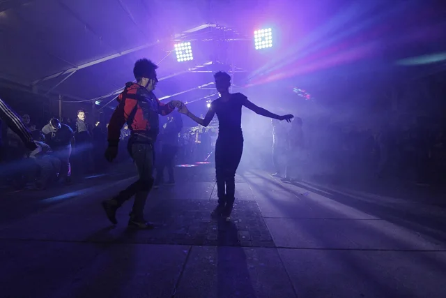
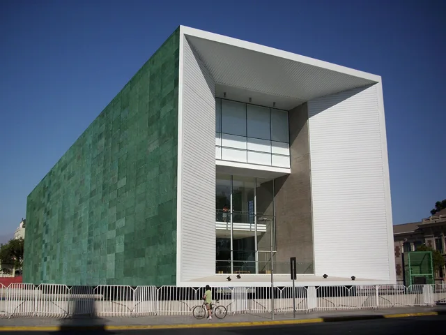

Una cosa lleva a otra.
30 ensayos sobre diseño, objetos y cultura material en América Latina. El diseño no empieza en el dibujo: empieza en el uso, la materia y la necesidad.
 PORTADA · SONIDO & GRÁFICA POPULAR · CARIBE COLOMBIANO
PORTADA · SONIDO & GRÁFICA POPULAR · CARIBE COLOMBIANO
El parlante también tiene pintor
Pintura, música y sonido popular en el Caribe colombiano: el frente pintado permite reconocer una máquina antes de escucharla. Un oficio donde convergen la acústica barrial y la rotulación popular.
Leer ensayo completo →
Una piel que se corta, no se pinta
Láminas de resina vegetal sobre madera: un saber que no empieza en el taller visible.

La aguja dejó el disco y entró en la greda
Una aguja de vitrola entra en la greda ahumada. El contraste entre barro negro y tierra blanca.

Antes del enlace estaba la fotocopia
El computador convivía con la fotocopia: autonomía editorial y contracultura subterránea.
¿Qué hace reconocible una máquina?
Las treinta lecturas ↗Imagen y créditos
Picó El Rojo, Barranquilla, 13.02.2024. La ficha fotográfica no identifica al pintor del frente; no se atribuye a William Gutiérrez. Foto: Jdvillalobos · CC BY-SA 4.0. Conversión a WebP y redimensionado proporcional, sin recorte ni retoque de contenido.

El parlante también tiene pintor
El frente pintado permite reconocer una máquina antes de escucharla. Empieza por su autoría y sus decisiones gráficas.
Entrar al artículo ↗
Imagen y créditos
Carabao en la LII Expofeira de Amapá, Macapá, Brasil, 03.10.2023. No es una fotografía de las fiestas de Superpop investigadas en Belém en 2016. Foto: Erich Macias/GEA · CC BY 3.0. Conversión a WebP y redimensionado proporcional, sin recorte ni retoque de contenido.

La fiesta también fabrica tecnología
La máquina se convierte en un montaje. En Pará, la presencia del público también forma parte de la escena.
Entrar al artículo ↗
Imagen y créditos
Baile sonidero en Martín Carrera, Ciudad de México, 24.02.2018. La fotografía muestra una escena de esa fecha; no permite identificar el audio ni anuncia un baile actual. Foto: Ederl.mx · CC BY-SA 4.0. Orientación EXIF, conversión a WebP y redimensionado proporcional; sin recorte ni alteración del contenido.

El barrio tiene una voz amplificada
Otro circuito permite comparar cómo música, voz y gráfica reúnen a personas sin confundir sus historias.
Entrar al artículo ↗
Imagen y créditos
Disco de vinilo de doce pulgadas, 2016. Un soporte que organiza la escucha en caras y secuencias. Foto: Evan-Amos · Dominio público. Derivado WebP redimensionado, sin recorte ni retoque de contenido; conserva la licencia de la fuente.

La música después de la canción
Del encuentro a la secuencia: quién elige lo que escuchamos y qué margen conservamos para descubrir.
Entrar al artículo ↗
Imagen y créditos
Maestro Gilberto Granja y barniz de Pasto, 28.09.2018, según la identificación del archivo fotográfico. Foto: Vladimir Hernández · CC BY-SA 4.0. Conversión a WebP y redimensionado proporcional, sin recorte ni retoque de contenido.

Una piel que se corta, no se pinta
Parece pintura, pero son láminas de resina. Sigue el corte, el soporte y los saberes que se reservan.
Entrar al artículo ↗
Imagen y créditos
Muestra de alfarería de Quinchamalí y Santa Cruz de Cuca, 28.05.2021. La ficha no individualiza la autoría de cada pieza. Foto: Feriquelme · CC BY-SA 4.0. Conversión a WebP y redimensionado proporcional, sin recorte ni retoque de contenido.

La aguja dejó el disco y entró en la greda
Una aguja de vitrola entra en la greda. El dibujo y el negro de la pieza proceden de operaciones distintas.
Entrar al artículo ↗
Imagen y créditos
Detalle de mate burilado atribuido a Irma Poma: matrimonio, 26.04.2026. La atribución sigue la ficha fotográfica. Obra: Irma Poma. Foto: H.dav.are · CC BY-SA 4.0. Conversión a WebP y redimensionado proporcional, sin recorte ni retoque de contenido.

Una historia que obliga a girar
La incisión se convierte en narración. Para recorrer escenas y palabras hay que girar el objeto.
Entrar al artículo ↗
Imagen y créditos
Pieza de ñandutí, 09.07.2020. La ficha no identifica a la mujer ni permite atribuirle la confección. No documenta el taller de joyería de 2025. Foto: Overkill53 · CC BY-SA 4.0. Conversión a WebP y redimensionado proporcional, sin recorte ni retoque de contenido.

El dibujo se sostiene en sus radios
El hilo cambia de tarea: radios y encuentros sostienen una superficie hecha también de vacíos.
Entrar al artículo ↗
Imagen y créditos
Fotocopiadora de GlenOak High School, Canton, Ohio, Estados Unidos, 2004. Referencia técnica; no se identifica como equipo de los editores de Medellín. Foto: Joseph Barillari at en.wikipedia . · CC BY-SA 3.0. Conversión a WebP y redimensionado proporcional, sin recorte ni retoque de contenido.

Antes del enlace estaba la fotocopia
Un computador puede convivir con la fotocopia. La autonomía de una publicación se decide también al distribuirla.
Entrar al artículo ↗
Imagen y créditos
Herramientas de serigrafía, 26.02.2014. Referencia técnica en otro contexto: no son materiales identificados del Taller Popular de Serigrafía argentino. Foto: Squeegee · CC BY-SA 3.0. Orientación EXIF, conversión a WebP y redimensionado proporcional; sin recorte ni alteración del contenido.

Una imagen que se imprime entre muchos
La matriz permite volver a imprimir. La imagen depende de otras manos para ponerse en movimiento.
Entrar al artículo ↗
Imagen y créditos
Inscripción identificada como Mujeres Creando en El Alto, Bolivia, 24.03.2016. El registro no identifica a la persona que la ejecutó. Foto: Caleidoscopic · CC BY-SA 4.0. Conversión a WebP y redimensionado proporcional, sin recorte ni retoque de contenido.

La frase cambia de dueña la pared
La voz ocupa una pared. La frase, la firma y el lugar cambian cómo se encuentra y se lee.
Entrar al artículo ↗
Imagen y créditos
Parque del Periodista, Medellín. Fotografía de contexto del lugar recordado por el periódico; no documenta su redacción ni una escena de reporteo. Foto: SajoR · Dominio público. Derivado WebP redimensionado, sin recorte ni retoque de contenido; conserva la licencia de la fuente.

Universo Centro: una poética del periodismo callejero
Del muro a la publicación: editar permite acercar historias sin exigir que todas tengan la misma voz.
Entrar al artículo ↗Lecturas y objetos destacados.
Exploraciones situadas en el territorio
OFICIOS / PASTO, COLOMBIA
Una piel que se corta, no se pinta
Láminas de resina vegetal sobre madera: un saber técnico que no empieza ni termina en el taller visible.
OFICIOS / ÑUBLE, CHILE
La aguja dejó el disco y entró en la greda
Una aguja de vitrola entra en la greda ahumada. El contraste entre barro negro y tierra blanca.
PUBLICACIONES / MEDELLÍN
Antes del enlace estaba la fotocopia
El computador convivía con la fotocopia: la autonomía editorial de una publicación subterránea.
OFICIOS / JUNÍN, PERÚ
Una historia que obliga a girar
La incisión se convierte en narración sobre la curva vegetal. Para leer la escena hay que girar la pieza.

SONIDO / CIUDAD DE MÉXICO
El barrio tiene una voz amplificada
Música, gráfica rotulada y voz en vivo: la ocupación comunitaria y acústica del espacio público.

OFICIOS / CHILE
Coser lo que no cabía en la noticia
Retazos de tela como registro testimonial y sustento material frente a la censura dictatorial.
FIELD NOTES
Una selección de diseño latinoamericano, por correo.
Solicitar por correo ↗El alta se confirma por respuesta.